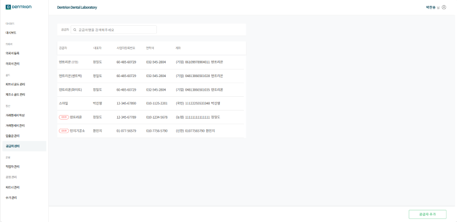
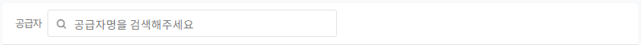
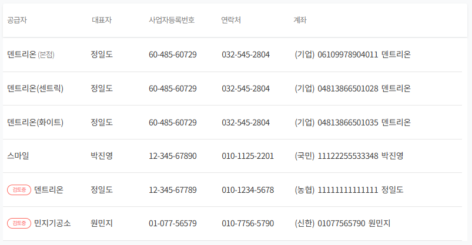

1.공급자 관리
이 화면은 공급자의 정보를 확인할 수 있으며, 공급자 추가가 가능합니다.

1-1. 기능 설명
1-1-1.검색
공급자명을 검색할 수 있습니다.

1-1-2. 공급자 목록
등록된 공급자의 정보를 확인할 수 있습니다.

1.공급자 : 등록된 공급자명입니다.
2.대표자 : 등록된 공급자의 대표자 이름입니다.
3.사업자등록번호 : 공급자의 사업자등록번호입니다.
4.연락처 : 공급자 대표 연락처입니다.
5.계좌 : 공급자의 계좌 번호입니다.
1-1-3. 공급자 추가
클릭 시 공급자 추가 팝업창이 생성됩니다.
모든 공급자 정보 및 증빙 자료 업로드를 업로드해야 [추가 요청] 버튼이 활성화됩니다.
추가 요청 시 관리자가 확인 후 승인하면 공급자 추가가 완료됩니다.